Государства и географические регионы
Постсоветские государства обычно делят на следующие пять групп. Принцип, по которому государство относят к той или иной группе, основывается на географических и культурных факторах, а также на истории взаимоотношений с Россией.
- Россия (в свою очередь состоит из нескольких географических регионов: Восточная Европа, Прибалтика, Северная Азия и Центральная Азия);
- Прибалтика (Северная Европа): Латвия, Литва и Эстония;
- Восточная Европа: Белоруссия, Молдавия и Украина;
- Закавказье (Передняя Азия и Восточная Европа): Азербайджан, Армения и Грузия;
- Центральная Азия: Казахстан, Киргизия, Таджикистан, Туркмения и Узбекистан.
Список стран Постсоветского пространства1
| Страна | Герб | Флаг | Столица | Дата незави- симости / дата распада СССР |
Территория (км2) |
Население | Плотность населения (чел./ км2) |
|---|---|---|---|---|---|---|---|
| СССР | 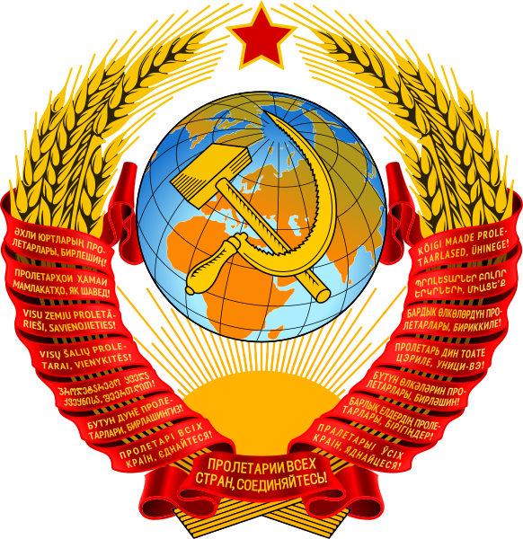 | 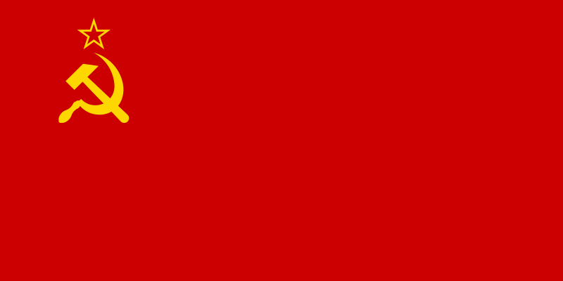 | Москва | 26 декабря 1991 |
22 402 200 | 292 610 734 | 13,1 |
| Российская Федерация |
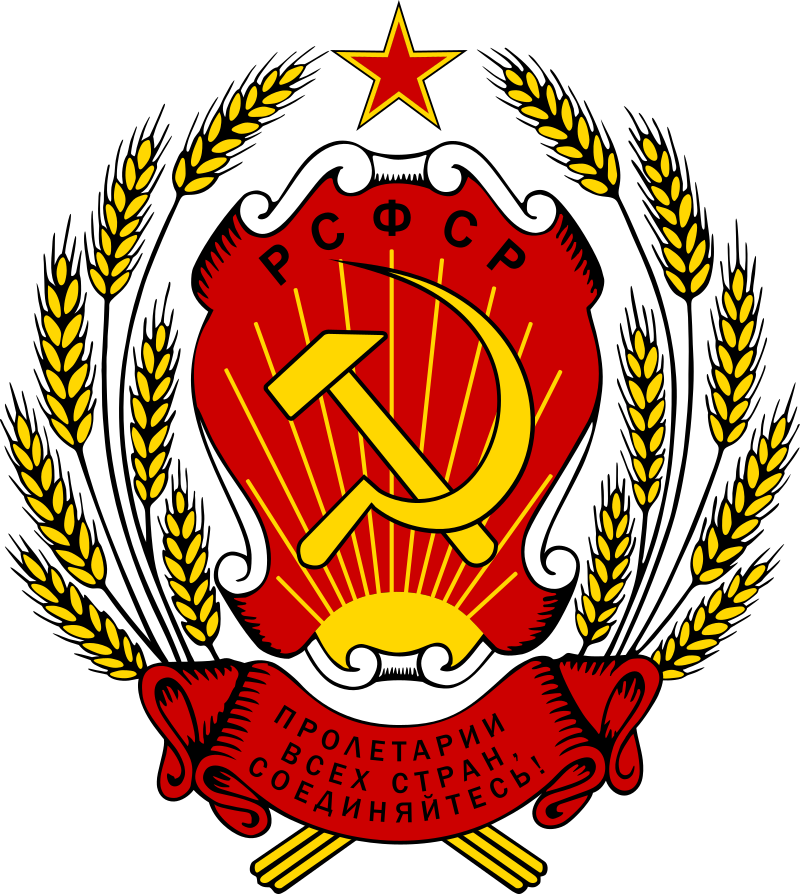
(в составе СССР) 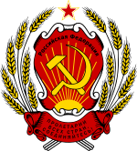 
|
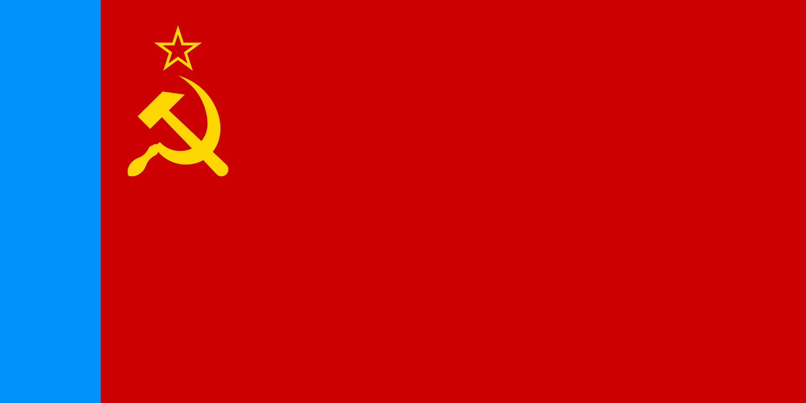
(в составе СССР) 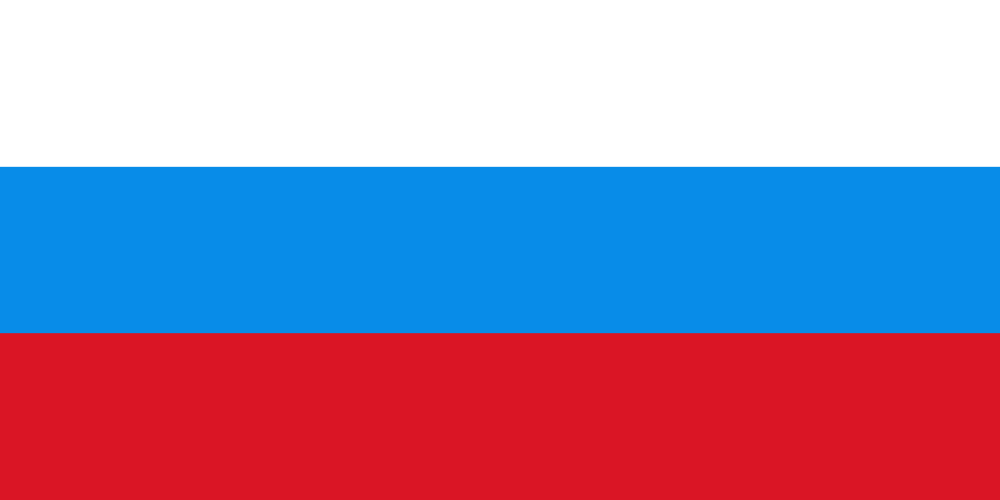 
|
Москва | 12 декабря 1991 |
17 125 191 | 146 781 095 | 8,56 |
| Украина |  |
 |
Киев | 24 августа 1991 |
603 549 | 42 248 598 | 73,92 |
| Беларусь |  |

|
Минск | 25 августа 1991 |
207 600 | 9 475 600 | 47,89 |
| ДНР2 | 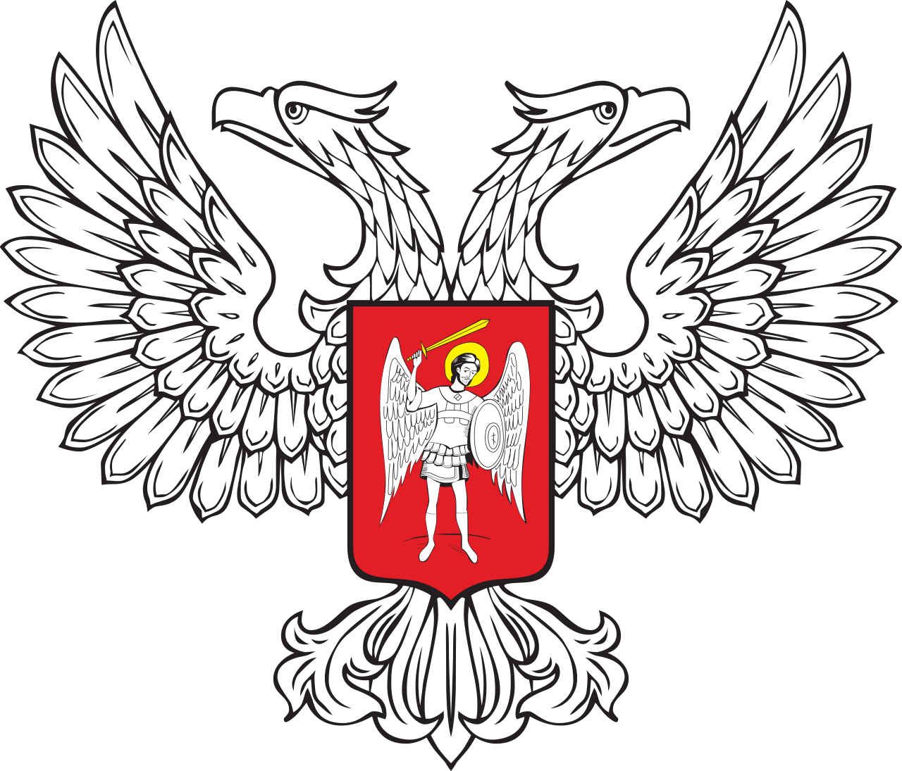 | 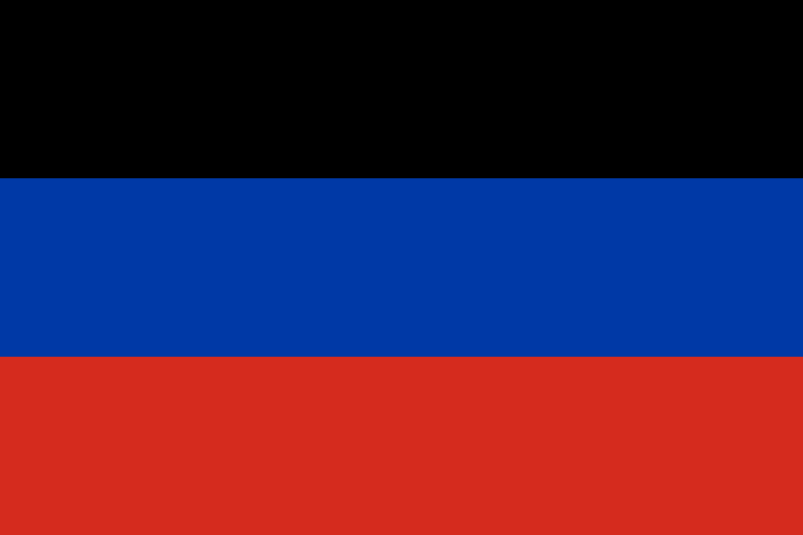 | Донецк | 7 апреля 2014 (от Украины) |
7 853 | 2 244 547 | 285,82 |
| ЛНР | 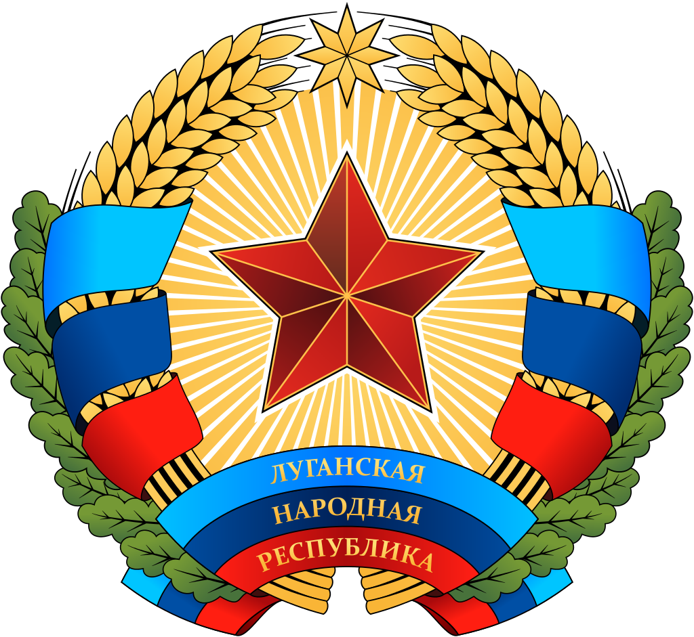 | 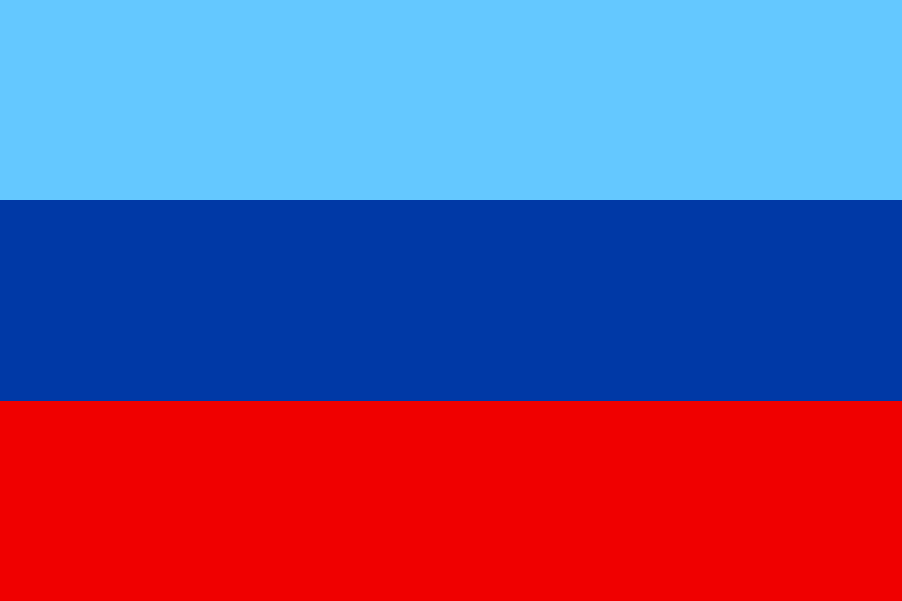 | Луганск | 12 мая 2014 (от Украины) |
8 377 | 1 450 000 | 173,09 |
Фото глав Государств Постсоветского пространоства
СССР
.png)
Председатель Верховного Совета СССР (25 мая 1989 — 15 марта 1990)
Президент СССР (15 марта 1990 — 25 декабря 1991)
Республика Беларусь 🇧🇾

Президент Республики Беларусь (с 20 июля 1994)
Российская Федерация 🇷🇺
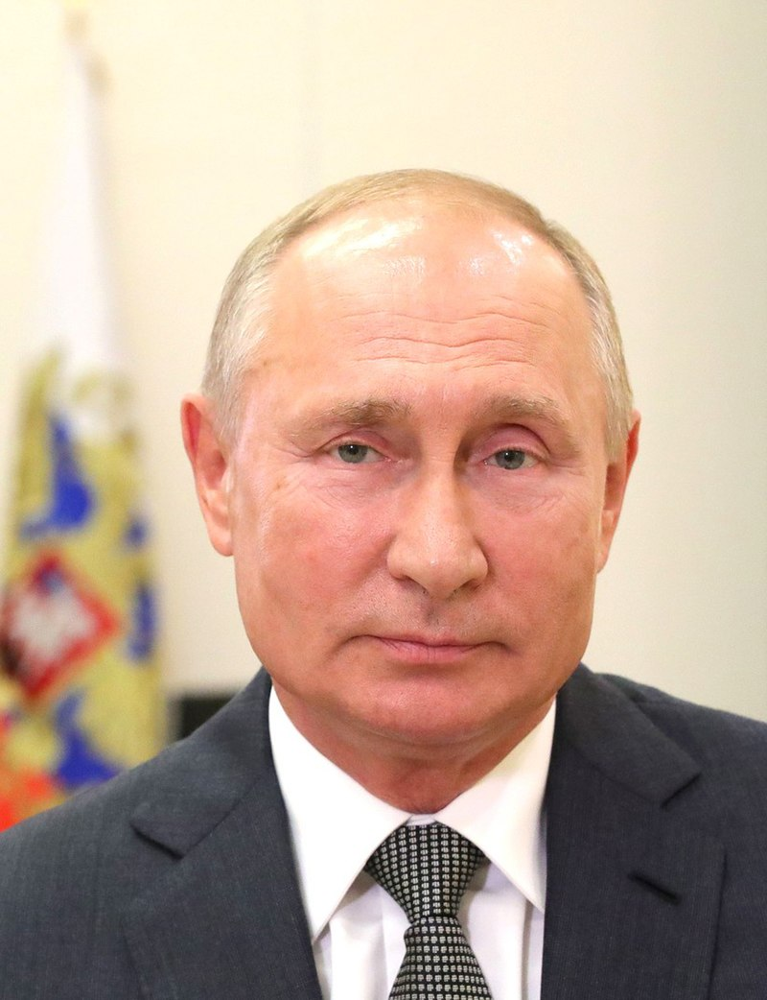Президент Российский Федерации (с 7 мая 2012)
Украина 🇺🇦

Президент Украины (с 2019)
Примечания:
- На это сайте будут представлены страны: Беларусь, Российская Федерация, Украина (с ДНР и ЛНР).
- Независимость ДНР и ЛНР не признают члены ООН